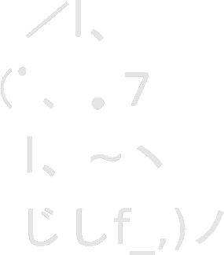

Repositories
Bookmarks
Could not fetch bookmarks.
Save your bookmarks in a file named bookmarks.html on this page's root directory.
In Firefox, this process can be automated as described in this post
You may need to make the bookmarks file world-readable if it was exported from a Chromium-based browser.